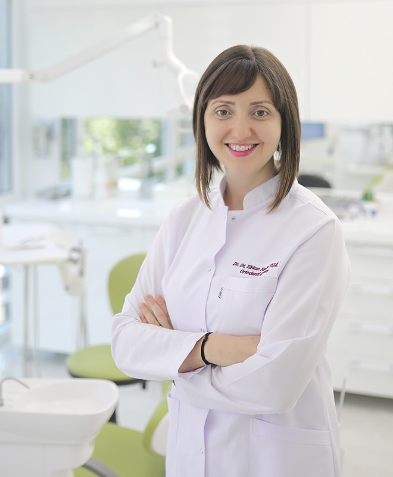

Dr. Türkan Nadire YEŞİL Ortodonti Uzmanı  1981 yılında Adana’da doğdu. İlk ve orta öğretimini (Danişment Gazi Anadolu Lisesi,okul birincisi) Adana’da tamamladı. Ardından Hacettepe Diş Hekimliği Fakültesi’ni bitirdikten sonra Hacettepe Ortodonti Anabilimdalı’nda Doktora eğitimini tamamladı. Amasya Ağız ve Diş Sağlığı merkezinde bir süre çalıştıktan sonra halen Amasya’da özel muayenehanesinde Ortodonti alanında hizmet vermektedir. Kendisine ait 5 tane yurtiçi,1 tane yurtdışı yayın, 5 tanede poster sunumu bulunmaktadır. Evli ve iki çocuk annesidir. * Maksiller kanin distalizasyonunda mini vidaların değerlendirilmesi başlıklı tez çalışması bulunmaktadır. * 2016-2018 yılları arasında Domingo Martin ve Renato Cocconi direktörlüğünde two years programme of TMJ first orthodontics kursunu tamamlayıp eklem öncelikli ortodonti konseptini uygulamaya başlamıştır. * 2018 senesinde Prof.Dr. Ravindra Nanda’ın Biomechanics and Esthetic based Orthodontic Treatment Strategies kursuna katılmıştır. * Yine 2018 yılında Dr. Chris Chang’in Non-surgical treatment for surgical malocclusions kursuna katılmıştır. * 2018 yılında Viyana ‘ da eklem öncelikli tedavi konseptleriyle ilgili FACE meeting e katılmıştır. * 2019 yılında BSCOSO nun Litvanya, Vilnius’ta Temporomandibular Disorders Unraveled: Physical Therapy, Orthodontics, Prostodontics and TMJ surgery toplantısına katılarak bütünsel ve multidisipliner yaklaşımlara ağırlık vererek çalışmalarına devam etmiştir. * 2019 yılında Romanya, Cluj’da Dr. Dania Tamimi’nin CBCT& MRI Radiologic Imaging: TMJ, Teeth and Beyond kursuna katılmıştır. * 2019 yılında Yunanistan, Atina’da Dr. Jay Levy’nin Occlusion 101:Physiology, Anatomy and Biomechanics of Occlusion kursuna katılmıştır. Aynı hocanın 2020 yılında Amerika Oregon’ dan online kursuna katılmıştır. * 2021 yılında fizyoterapist Prof. Dr. Mariano Rocabado’nun Craniomandibular dynamics and TMJ kursuna katılmıştır. * 2017 yılında FACE kursu direktörlerinden Dr. Alberto Canabez’in kliniğinde klinik gözlemcilik yapmıştır. Türk Ortodonti Derneği üyesidir. * 1st FACE online sempozyumunda, simply-Ortho online platformunda, Arap Orofasiyal ağrı ve Disfonksiyon Derneğinde, Doublecheck Akademide ve OHI-S’ in İstanbul kongrelerinde konuşmacılık yapmıştır.